#minecraft:walls
物品标签 · 239 个已收录成员
标签成员 (239)
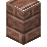
花岗岩砖墙blockbox:granite_brick_wall
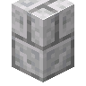
闪长岩砖墙blockbox:diorite_brick_wall
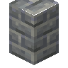
安山岩砖墙blockbox:andesite_brick_wall
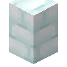
雪砖墙blockbox:snow_brick_wall
 浮冰砖墙
浮冰砖墙blockbox:packed_ice_brick_wall?面包墙
caupona:loaf_heap_wall
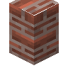
混合红砖墙caupona:mixed_bricks_wall
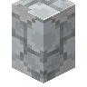
片石饰面混凝土墙caupona:opus_incertum_wall
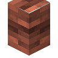
嵌砖混凝土墙caupona:opus_latericium_wall
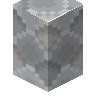
锥石饰面混凝土墙caupona:opus_reticulatum_wall
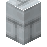
长英质凝灰岩砖墙caupona:felsic_tuff_bricks_wall
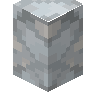
长英质凝灰岩墙caupona:felsic_tuff_wall
 磨制长英质凝灰岩墙
磨制长英质凝灰岩墙caupona:polished_felsic_tuff_wall
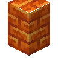
树脂砖墙minecraft:resin_brick_wall
 朱砂墙
朱砂墙minecraft:cinnabar_wall
 磨制朱砂墙
磨制朱砂墙minecraft:polished_cinnabar_wall
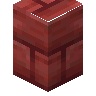
朱砂砖墙minecraft:cinnabar_brick_wall
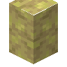
硫黄墙minecraft:sulfur_wall
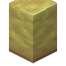
磨制硫黄墙minecraft:polished_sulfur_wall
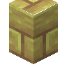
硫黄砖墙minecraft:sulfur_brick_wall
 金属板墙
金属板墙architects_palette:plating_wall
 石灰石墙
石灰石墙architects_palette:myonite_wall
 石灰石砖墙
石灰石砖墙architects_palette:myonite_brick_wall
 糊状石灰石砖墙
糊状石灰石砖墙architects_palette:mushy_myonite_brick_wall
 橄榄石砖墙
橄榄石砖墙architects_palette:olivestone_brick_wall
 橄榄石瓦墙
橄榄石瓦墙architects_palette:olivestone_tile_wall
 海藻砖墙
海藻砖墙architects_palette:algal_brick_wall
 蔓生海藻砖墙
蔓生海藻砖墙architects_palette:overgrown_algal_brick_wall
 煤矿石砖墙
煤矿石砖墙architects_palette:coal_ore_brick_wall
 青金石矿石砖墙
青金石矿石砖墙architects_palette:lapis_ore_brick_wall
 红石矿石砖墙
红石矿石砖墙architects_palette:redstone_ore_brick_wall
 铁矿石砖墙
铁矿石砖墙architects_palette:iron_ore_brick_wall
 金矿石砖墙
金矿石砖墙architects_palette:gold_ore_brick_wall
 绿宝石矿石砖墙
绿宝石矿石砖墙architects_palette:emerald_ore_brick_wall
 钻石矿石砖墙
钻石矿石砖墙architects_palette:diamond_ore_brick_wall
 燧石瓦墙
燧石瓦墙architects_palette:flint_tile_wall
 磨制浮冰墙
磨制浮冰墙architects_palette:polished_packed_ice_wall
 骨砖墙
骨砖墙architects_palette:osseous_brick_wall
 凋零骨砖墙
凋零骨砖墙architects_palette:withered_osseous_brick_wall
 Polished Glowstone Wall
Polished Glowstone Wallarchitects_palette:polished_glowstone_wall
 跃迁石墙
跃迁石墙architects_palette:warpstone_wall
 玄武岩瓦墙
玄武岩瓦墙architects_palette:basalt_tile_wall?Oak Board Wall
architects_palette:oak_board_wall?Birch Board Wall
architects_palette:birch_board_wall?Spruce Board Wall
architects_palette:spruce_board_wall?Jungle Board Wall
architects_palette:jungle_board_wall?Dark Oak Board Wall
architects_palette:dark_oak_board_wall?Acacia Board Wall
architects_palette:acacia_board_wall?Mangrove Board Wall
architects_palette:mangrove_board_wall?Cherry Board Wall
architects_palette:cherry_board_wall?Bamboo Board Wall
architects_palette:bamboo_board_wall?Crimson Board Wall
architects_palette:crimson_board_wall?Warped Board Wall
architects_palette:warped_board_wall?Twisted Board Wall
architects_palette:twisted_board_wall
 Dripstone Brick Wall
Dripstone Brick Wallarchitects_palette:dripstone_brick_wall
 Calcite Brick Wall
Calcite Brick Wallarchitects_palette:calcite_brick_wall
 Tuff Brick Wall
Tuff Brick Wallarchitects_palette:tuff_brick_wall
 Nether Brass Wall
Nether Brass Wallarchitects_palette:nether_brass_wall
 Cut Nether Brass Wall
Cut Nether Brass Wallarchitects_palette:cut_nether_brass_wall
 Esoterrack Wall
Esoterrack Wallarchitects_palette:esoterrack_wall
 Esoterrack Brick Wall
Esoterrack Brick Wallarchitects_palette:esoterrack_brick_wall
 Onyx Wall
Onyx Wallarchitects_palette:onyx_wall
 Onyx Brick Wall
Onyx Brick Wallarchitects_palette:onyx_brick_wall
 Wardstone Wall
Wardstone Wallarchitects_palette:wardstone_wall
 Wardstone Brick Wall
Wardstone Brick Wallarchitects_palette:wardstone_brick_wall
 Ancient Plating Wall
Ancient Plating Wallarchitects_palette:ancient_plating_wall
 Tread Plate Wall
Tread Plate Wallarchitects_palette:tread_plate_wall
 Hazard Wall
Hazard Wallarchitects_palette:hazard_wall
 Sheet Metal Wall
Sheet Metal Wallarchitects_palette:sheet_metal_wall
 Oracle Brick Wall
Oracle Brick Wallarchitects_palette:oracle_brick_wall
 Dark Oracle Brick Wall
Dark Oracle Brick Wallarchitects_palette:dark_oracle_brick_wall
 Oracle Tile Wall
Oracle Tile Wallarchitects_palette:oracle_tile_wall
 Cerebral Wall
Cerebral Wallarchitects_palette:cerebral_wall
 Cerebral Tile Wall
Cerebral Tile Wallarchitects_palette:cerebral_tile_wall
 Moonshale Wall
Moonshale Wallarchitects_palette:moonshale_wall
 Moonshale Brick Wall
Moonshale Brick Wallarchitects_palette:moonshale_brick_wall
 Craterstone Wall
Craterstone Wallarchitects_palette:craterstone_wall
 Nebulite Wall
Nebulite Wallarchitects_palette:nebulite_wall
 干燥砂岩墙
干燥砂岩墙atmospheric:arid_sandstone_wall
 干燥红砂岩墙
干燥红砂岩墙atmospheric:red_arid_sandstone_wall
 象牙白石灰华墙
象牙白石灰华墙atmospheric:ivory_travertine_wall
 桃红石灰华墙
桃红石灰华墙atmospheric:peach_travertine_wall
 柿子橙石灰华墙
柿子橙石灰华墙atmospheric:persimmon_travertine_wall
 藏红石灰华墙
藏红石灰华墙atmospheric:saffron_travertine_wall
 粗玄岩墙
粗玄岩墙atmospheric:dolerite_wall
 胭脂砖瓦墙
胭脂砖瓦墙atmospheric:carmine_shingle_wall
 胭脂铺路石墙
胭脂铺路石墙atmospheric:carmine_pavement_wall
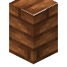
蜗牛壳砖墙autumnity:snail_shell_brick_wall
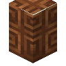
蜗牛壳瓦墙autumnity:snail_shell_tile_wall
 椰棕砖块墙
椰棕砖块墙bountifulfares:coir_brick_wall
 长石砖墙
长石砖墙bountifulfares:feldspar_brick_wall
 贝壳砖墙
贝壳砖墙ecologics:seashell_tile_wall
 雪砖墙
雪砖墙ecologics:snow_brick_wall
 冰砖墙
冰砖墙ecologics:ice_brick_wall
 泥土砖墙
泥土砖墙environmental:dirt_brick_wall
 泥土瓦墙
泥土瓦墙environmental:dirt_tile_wall
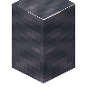
阴沉石墙eternal_starlight:grimstone_wall
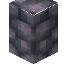
阴沉石圆石墙eternal_starlight:cobbled_grimstone_wall
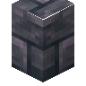
阴沉石砖墙eternal_starlight:grimstone_brick_wall
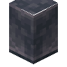
磨制阴沉石墙eternal_starlight:polished_grimstone_wall
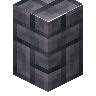
阴沉石瓦墙eternal_starlight:grimstone_tile_wall
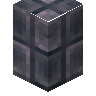
磨制阴沉石瓦墙eternal_starlight:polished_grimstone_tile_wall
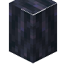
虚空石墙eternal_starlight:voidstone_wall
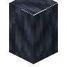
虚空石圆石墙eternal_starlight:cobbled_voidstone_wall
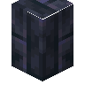
虚空石砖墙eternal_starlight:voidstone_brick_wall
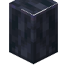
磨制虚空石墙eternal_starlight:polished_voidstone_wall
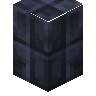
虚空石瓦墙eternal_starlight:voidstone_tile_wall
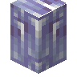
恒冰砖墙eternal_starlight:eternal_ice_brick_wall
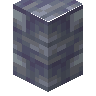
霾冰砖墙eternal_starlight:haze_ice_brick_wall
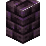
星云石砖墙eternal_starlight:nebulaite_brick_wall
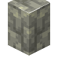
光耀石墙eternal_starlight:radianite_wall
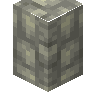
光耀石圆石墙eternal_starlight:cobbled_radianite_wall
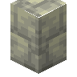
磨制光耀石墙eternal_starlight:polished_radianite_wall
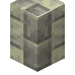
光耀石砖墙eternal_starlight:radianite_brick_wall
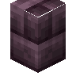
耀斑砖墙eternal_starlight:flare_brick_wall
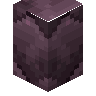
切制耀斑砖墙eternal_starlight:cut_flare_brick_wall
 耀斑瓦墙
耀斑瓦墙eternal_starlight:flare_tile_wall
 切制耀斑瓦墙
切制耀斑瓦墙eternal_starlight:cut_flare_tile_wall
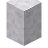
星泉岩墙eternal_starlight:stellagmite_wall
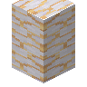
熔融星泉岩墙eternal_starlight:molten_stellagmite_wall
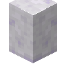
磨制星泉岩墙eternal_starlight:polished_stellagmite_wall
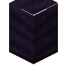
磨制深渊石墙eternal_starlight:polished_abysslate_wall
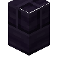
磨制深渊石砖墙eternal_starlight:polished_abysslate_brick_wall
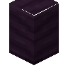
磨制恒温深渊石墙eternal_starlight:polished_thermabysslate_wall
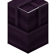
磨制恒温深渊石砖墙eternal_starlight:polished_thermabysslate_brick_wall
 磨制阴冷深渊石墙
磨制阴冷深渊石墙eternal_starlight:polished_cryobysslate_wall
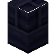
磨制阴冷深渊石砖墙eternal_starlight:polished_cryobysslate_brick_wall
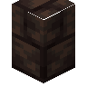
夜泥砖墙eternal_starlight:nightfall_mud_brick_wall
 暮光砂岩墙
暮光砂岩墙eternal_starlight:twilight_sandstone_wall
 切制暮光砂岩墙
切制暮光砂岩墙eternal_starlight:cut_twilight_sandstone_wall
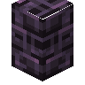
尘蒙砖墙eternal_starlight:dusted_brick_wall
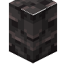
泉石墙eternal_starlight:springstone_wall
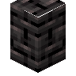
泉石砖墙eternal_starlight:springstone_brick_wall
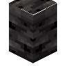
磨制泉石墙eternal_starlight:polished_springstone_wall热泉石墙
eternal_starlight:thermal_springstone_wall热泉石砖墙
eternal_starlight:thermal_springstone_brick_wall流璃砖墙
eternal_starlight:flowglaze_brick_wall绯夜脂砖墙
eternal_starlight:amaramber_brick_wall
 榧木瓦墙
榧木瓦墙eternal_starlight:torreya_tile_wall毒石墙
eternal_starlight:toxite_wall毒石砖墙
eternal_starlight:toxite_brick_wall磨制毒石墙
eternal_starlight:polished_toxite_wall饥渴之牙瓦墙
eternal_starlight:tooth_of_hunger_tile_wall魔窟石砖墙
eternal_starlight:doomeden_brick_wall磨制魔窟石砖墙
eternal_starlight:polished_doomeden_brick_wall魔窟石墙
eternal_starlight:doomeden_tile_wall圆石墙
minecraft:cobblestone_wall
 苔石墙
苔石墙minecraft:mossy_cobblestone_wall红砖墙
minecraft:brick_wall海晶石墙
minecraft:prismarine_wall红砂岩墙
minecraft:red_sandstone_wall苔石砖墙
minecraft:mossy_stone_brick_wall
 花岗岩墙
花岗岩墙minecraft:granite_wall石砖墙
minecraft:stone_brick_wall
 下界砖墙
下界砖墙minecraft:nether_brick_wall安山岩墙
minecraft:andesite_wall红色下界砖墙
minecraft:red_nether_brick_wall
 砂岩墙
砂岩墙minecraft:sandstone_wall末地石砖墙
minecraft:end_stone_brick_wall闪长岩墙
minecraft:diorite_wall黑石墙
minecraft:blackstone_wall磨制黑石砖墙
minecraft:polished_blackstone_brick_wall磨制黑石墙
minecraft:polished_blackstone_wall深板岩圆石墙
minecraft:cobbled_deepslate_wall磨制深板岩墙
minecraft:polished_deepslate_wall
 深板岩瓦墙
深板岩瓦墙minecraft:deepslate_tile_wall深板岩砖墙
minecraft:deepslate_brick_wall泥砖墙
minecraft:mud_brick_wall
 石质顶草墙
石质顶草墙mcwfences:stone_grass_topped_wall
安山岩顶草墙mcwfences:andesite_grass_topped_wall
闪长岩顶草墙mcwfences:diorite_grass_topped_wall
花岗岩顶草墙mcwfences:granite_grass_topped_wall
砂岩顶草墙mcwfences:sandstone_grass_topped_wall
红砂岩顶草墙mcwfences:red_sandstone_grass_topped_wall
黑石顶草墙mcwfences:blackstone_grass_topped_wall
下界砖顶草墙mcwfences:nether_brick_grass_topped_wall
末地砖顶草墙mcwfences:end_brick_grass_topped_wall
深板岩顶草墙mcwfences:deepslate_grass_topped_wall
深板岩砖顶草墙mcwfences:deepslate_brick_grass_topped_wall
石英顶草墙mcwfences:quartz_grass_topped_wall
泥砖顶草墙mcwfences:mud_brick_grass_topped_wall
海晶石顶草墙mcwfences:prismarine_grass_topped_wall
 橡木绿篱
橡木绿篱mcwfences:oak_hedge
 云杉绿篱
云杉绿篱mcwfences:spruce_hedge
 白桦绿篱
白桦绿篱mcwfences:birch_hedge
 丛林绿篱
丛林绿篱mcwfences:jungle_hedge
 金合欢绿篱
金合欢绿篱mcwfences:acacia_hedge
 深色橡木绿篱
深色橡木绿篱mcwfences:dark_oak_hedge
 红树绿篱
红树绿篱mcwfences:mangrove_hedge
 杜鹃绿篱
杜鹃绿篱mcwfences:azalea_hedge
 开花杜鹃绿篱
开花杜鹃绿篱mcwfences:flowering_azalea_hedge
 樱花绿篱
樱花绿篱mcwfences:cherry_hedge
 黑硅岩瓷砖墙
黑硅岩瓷砖墙natures_spirit:chert_tile_wall
 磨制黑硅岩墙
磨制黑硅岩墙natures_spirit:polished_chert_wall
 黑硅岩砖墙
黑硅岩砖墙natures_spirit:chert_brick_wall
 洞石砖瓦墙
洞石砖瓦墙natures_spirit:travertine_tile_wall
 洞石碎石墙
洞石碎石墙natures_spirit:cobbled_travertine_wall
 苔藓洞石碎石墙
苔藓洞石碎石墙natures_spirit:mossy_cobbled_travertine_wall
 苔藓洞石砖墙
苔藓洞石砖墙natures_spirit:mossy_travertine_brick_wall
 磨制洞石墙
磨制洞石墙natures_spirit:polished_travertine_wall
 洞石砖墙
洞石砖墙natures_spirit:travertine_brick_wall
 粉砂岩墙
粉砂岩墙natures_spirit:pink_sandstone_wall
 巧克力砖墙
巧克力砖墙neapolitan:chocolate_brick_wall
 巧克力瓦墙
巧克力瓦墙neapolitan:chocolate_tile_wall
 黑石瓦墙
黑石瓦墙supplementaries:blackstone_tile_wall
 灰烬砖墙
灰烬砖墙supplementaries:ash_bricks_wall
 青金石砖墙
青金石砖墙supplementaries:lapis_bricks_wall
 石瓦墙
石瓦墙supplementaries:stone_tile_wall
 脆石砖墙
脆石砖墙supplementaries:brittlestone_bricks_wall
 长尾鲨齿瓦墙
长尾鲨齿瓦墙upgrade_aquatic:tooth_wall
 长尾鲨齿砖墙
长尾鲨齿砖墙upgrade_aquatic:tooth_brick_wall
 鳞甲砖瓦楼梯墙
鳞甲砖瓦楼梯墙upgrade_aquatic:scute_shingle_wall
 鳞甲铺路石墙
鳞甲铺路石墙upgrade_aquatic:scute_pavement_wall
 珊瑚石墙
珊瑚石墙upgrade_aquatic:coralstone_wall
 气泡珊瑚石墙
气泡珊瑚石墙upgrade_aquatic:bubble_coralstone_wall
 鹿角珊瑚石墙
鹿角珊瑚石墙upgrade_aquatic:horn_coralstone_wall
 管珊瑚石墙
管珊瑚石墙upgrade_aquatic:tube_coralstone_wall
 脑纹珊瑚石墙
脑纹珊瑚石墙upgrade_aquatic:brain_coralstone_wall
 火珊瑚石墙
火珊瑚石墙upgrade_aquatic:fire_coralstone_wall
 糖果脑珊瑚石墙
糖果脑珊瑚石墙upgrade_aquatic:acan_coralstone_wall
 软指珊瑚石墙
软指珊瑚石墙upgrade_aquatic:finger_coralstone_wall
 星状珊瑚石墙
星状珊瑚石墙upgrade_aquatic:star_coralstone_wall
 苔绿珊瑚石墙
苔绿珊瑚石墙upgrade_aquatic:moss_coralstone_wall
 花瓣珊瑚石墙
花瓣珊瑚石墙upgrade_aquatic:petal_coralstone_wall
 枝状珊瑚石墙
枝状珊瑚石墙upgrade_aquatic:branch_coralstone_wall
 礁石珊瑚石墙
礁石珊瑚石墙upgrade_aquatic:rock_coralstone_wall
 枕状珊瑚石墙
枕状珊瑚石墙upgrade_aquatic:pillow_coralstone_wall
 丝珊瑚石墙
丝珊瑚石墙upgrade_aquatic:silk_coralstone_wall
 铬珊瑚石墙
铬珊瑚石墙upgrade_aquatic:chrome_coralstone_wall
 海晶珊瑚石墙
海晶珊瑚石墙upgrade_aquatic:prismarine_coralstone_wall
 远古海晶珊瑚石墙
远古海晶珊瑚石墙upgrade_aquatic:elder_prismarine_coralstone_wall
 失活的珊瑚石墙
失活的珊瑚石墙upgrade_aquatic:dead_coralstone_wall
 海带圆石墙
海带圆石墙upgrade_aquatic:kelpy_cobblestone_wall
 海带石砖墙
海带石砖墙upgrade_aquatic:kelpy_stone_brick_wall
 海带圆石砖墙
海带圆石砖墙upgrade_aquatic:kelpy_cobblestone_brick_wall
 海带圆石瓦墙
海带圆石瓦墙upgrade_aquatic:kelpy_cobblestone_tile_wall凝灰岩墙
minecraft:tuff_wall磨制凝灰岩墙
minecraft:polished_tuff_wall凝灰岩砖墙
minecraft:tuff_brick_wall
使用该标签的配方
无